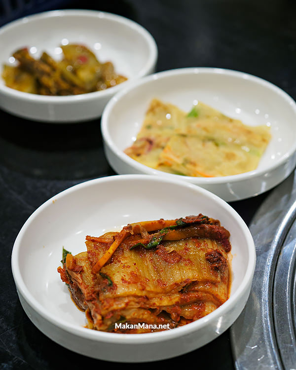

Bagi yang sudah berkunjung disini sebelumnya tentu ga asing lagi dengan nama K-Pot.
Restoran yang menyajikan hidangan khas Korea ini masih tetap berada di kawasan yang sama yakni Multatuli, namun hadir dengan penampilan baru.
Setelah sebelumnya banyak dikeluh karena tempatnya hectic dan sempit, tak tanggung-tanggung kali ini K-Pot yang baru saja pindah ini menempati 2 ruko sekaligus.
Di tempat yang baru ini, areal makan terbagi 2 lantai, dimana lantai 2 lebih sering digunakan untuk acara makan BBQ karena tiap meja memiliki exhaust fan.
Ada 3 jenis casseroles yang dihidangkan di resto ini (Beef, Seafood, dan Pork). Nah, karena niatnya udah mesan BBQ Pork, untuk menu yang satu ini jatuh ke pilihan Seafood (Haemul JJigae).
Hidangan yang cukup besar ini dibanderol 250rb, lumayan tinggi harganya namun lauknya tidaklah pelit. Tentu saja dengan kombinasi seafood dan bumbu menjadikan kuah dengan mie ini superb tasteful!
Ga lama kemudian, Banchan pun dihidangkan. Hidangan side dish untuk menemani menu BBQ ini datang dengan porsi yang kecil. Di K-Pot, menu ini refillable.
Berhubung porsinya kecil dan tidak berbanding dengan kami, acap kali menu ini harus direquest bolak balik.

Sambil menikmati Banchan, seporsi Samgyeopsal (100rb) pun mulai dipanggang. K-Pot menawarkan apakah daging mentah ini mau dipanggang sendiri atau pelayan.
Potongan daging 250gr ini agak terasa hambar rasanya. Untuk harga yang ditawarkan, not bad lah sebenarnya.
Tapi kalo disuruh pilih, lebih enakan Dwaeji Bulgogi (120rb).
Masih menggunakan potongan daging yang sama (pork belly), kelemahan Samgyeopsal sebelumnya ditutup dengan marinasi saos, yang mana menjadikan flavornya lebih meresap ke daging.
Menu yang kudu ga boleh dilewati juga ialah Dolsot Bibimbap (75rb). Nasi campur ala Korea ini dihidangkan di mangkuk batu yang dipanaskan.
Sekilas penampakannya menggugah selera, tetapi cara makannya ialah diaduk semua hingga semua bahan bercampur dengan nasi, termasuk kuning telur yang masih mentah kemudian memberikan tekstur yang sticky ke nasinya. Best eaten while hot!
Lastly, Miyeok Guk (55rb). Jamur enoki dengan potongan rumput laut dan beberapa potong sotong dan kepah. Throw them all together, put some water dan penyedap and call it soup. Dissapointed with this one.
K-Pot Korean Cuisine
Kompleks Multatuli Blok BB No 16-17
0851 0062 0011
Senin tutup
11.00-15.00 / 18.00-22.00